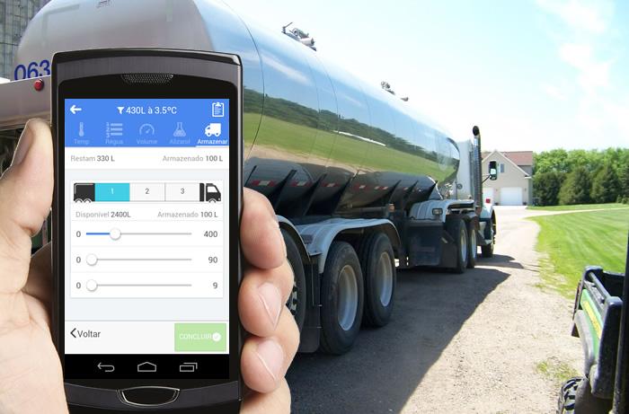

Milk's Rota (SclRota) - Manual de Operação.#
Aplicativo Coletor#
A plataforma Milk's Rota é composta por uma série de serviços idealizados e moldados para atender as necessidades de automação do processo de coleta de leite, atuando principalmente no registro das informações obtidas na captação e coleta do leite.
O Aplicativo Coletor Milk' Rota foi escrito com o principal objetivo de fornecer aos Agentes de Coleta (Motoristas), condições de manter as informações geradas nas visitas
as fazendas produtoras de forma organizada, acessível e correta.
As funcionalidades implementadas pelo aplicativo coletor foram idealizadas com base na rotina do agente de coleta e apresentadas em uma interface simples e funcional, evitando operações complicadas que pudessem afetar a rotina diária do Agente de Coleta.

Registro das operações de coleta pelo aplicativo#
Este manual tem por objetivo apresentar as pricipais funcionalidades do aplicativo coletor, esclarecer dúvidas e prover uma forma rápida de consulta aos procedimentos corretos de anotação dos registros das visitas nas fazendas produtoras.
Funcionamento#
O App Milk' Rota foi desenvolvido para possibilitar que os registros das visitas sejam feitos independente da cobertura de sinal de rede ou internet, sendo assim, após realizada a carga incial dos dados e abertura de viagem, NÃO há necessidade de acessso a rede ou internet para que o App funcione. Os registros das coletas podem ser anotados, mesmo sem esta cobertura. Quando o agente de coleta (Motorista) se desloca pelas fazendas produtoras e o sistema encontra uma cobertura de rede, o App Coletor envia as informações para o laticínio ou cooperativa, mas é na chegada do veiculo á plataforma de descarga, quando o agente de coleta Finaliza a viagem e "Sincroniza" os dados, que as informaçòes são efetivamente enviadas e armazendas.
Equipamentos#
Para que os agentes de coleta consigam realizar todos registros das operações, o sistema utiliza alguns equipamentos::
1. Celular
2. Impressora Portátil
3. Etiquetas NFC
Recomendamos que o celular seja carregado diariamente,mas na maioria dos casos existe um carregador veícular, tando para o celular como para a impressora, que devem ser utilizados no caso de falta de carga nas baterias.
A impressora no modelo MPT-II ou Leopardo, conseguem operar por até 3 dias com uma única carga. Recomenda-se que os equipamento recebam carga completa, antes do início da viagem.As etiquetas NFC - Não utilizam baterias e são ativadas no momento em que o celular é aproximado das mesmas para fazer a leitura.